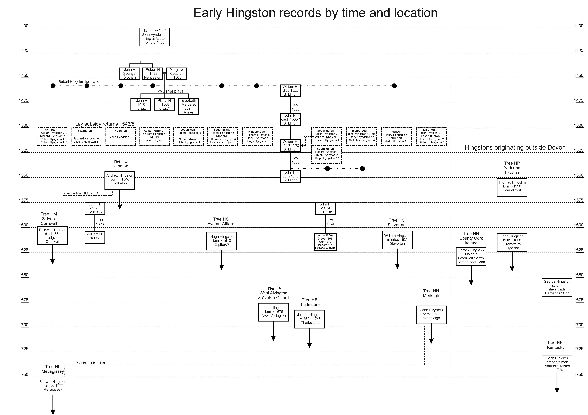

Hingstons in Devon before 1650
It seems very likely that the Hingston name began in Devon. From about 1650 onwards most births, marriages and deaths were recorded in Parish Registers, and the problem is merely to find them and link them together. Before 1650 the records are much more sparse, so this page will include listings of individual events from which we might hope to tie the various families together. The records are in no particular order.
I would welcome extra information to put here.
1. Robert Hingston, died 1487
In the Devon and Cornwall Record Society files at the West Country Studies Library in Exeter there is a family file marked Hingston, which consists of a single sheet drawn in pencil with very small writing. It is a sketch rather than a carefully drawn tree, and the writing is very faint and very small. A magnifying glass would be useful if the writing was to be studied properly. At the moment I have rough notes I made in 1998 and a copy kindly scanned for me by the Libraian.
The notes were bequeathed to the society in 1938 (AD!) by Lt Col F B Prideaux.
ROBERT HINGSTON died 28 Jan 1487/8. His wife is shown as MARGARET COTTWALL (or Cotterall), who later married WILLIAM ASHFORD. Margaret died 26 Oct 1508 and William Ashford died 17 Jul 1508. William is shown as having a son Nicholas Ashford born 1485, so presumably he was also married earlier.
Robert and Margaret are shown as having six children.
- JOHN HINGSTON, born 1475, d.s.p.
- PHILIP HINGSTON died 17 Oct 1508, (see list of land below)
- ELIZABETH HINGSTON born before 1485
- MARGARET HINGSTON born before 1485
- JOAN HINGSTON born before 1485
- AGNES HINGSTON born before 1485
JOHN HINGSTON is shown as Robert's brother. John's wife was ELIZABETH. John must have died relatively young since Elizabeth is shown as possibly remarrying John Bury of Colaton.
The listing of the property of Robert Hingston was presumably taken from his will. Robert Hingston had messuage in Hingston, common pasture in Bigbury, messuage in Lingston, 6 messuages in Newton Ferrers, messuage in Dunston (in Yealmpton), messauge in Earl's Plympton, messuage in Peters Tavy, tenement in Kingsbridge, furlong in Langiston ( check against original ) and Brownston, rent ( check ) in Briggeland. Also 6 messuages in Howton, 1 messuage in Nodston ( check ) and Holwell in Bigbury and a messuage in Hawkridge. The Trustees in 1459 ( or 1479? ) were Sir Philip Courteney, Edward Courteney (living 1511), Thomas Cotterell and William Fortescue (living 1511). Also held messuage in Diptford, house in Rathew ( check ), furlong in Over ----- Dowslegh ( check ), 8 acres in Wyndysland, furlong in Ayssbrigge. He granted them in 1479 to John Hyddeston his younger brother and Elizabeth, later wife of John Bury of Colaton, and the sons of John H who d.s.p.
Listed against Robert's son Philip is:- He was seized of a messuage and 100 acres and 3 tenemenets and 40 acres in Wonewyll. Lord of manor of Kingston. A messuage in Mouthcomb, a tenement in Gt Totness, a tenement in Denbury, half a messuage and 40 acres in Long Huish. Note that there is no mention of a wife or family of Philip.
The significance of this will is that it shows the names Hingston and Hyddeston being used for two brothers, and also shows links between land held in Bigbury, Aveton Gifford and Wonwell. Robert seems to have left considerable land but it is his son Philip who appears to have built up the holding of land in Wonwell, which seems to be the seat of the family in Tree HD. If Robert and Margaret's eldest child was born in 1475 they were presumably born in about 1450, or perhaps a little later. Their son Philip would have been born c. 1477 (if his brother John was the eldest), so he would only have been about 30 when he died. The presence of the names Courteney and Fortescue show that the family were well-connected; these are Anglo-Norman families who had been the local aristocracy since the conquest.
(This entry added 21 Mar 2007)
Both of these entries refer to the 1488 IPM which has now been transcribed separately.
1A. Inquisition Post Mortem
This transcript has been provided by Jill Cucco and comes from a handwritten document produced by her grandfather. It is not clear whether it is a verbatim transcript or an interpretation by him; the latter is more likely since it refers to undermentioned lands which are not then listed. It clearly relates to the same event as the entry above, but differs in detail. Comments in italics by CJB. Dates expressed in Regnal years have been converted to calendar years. Glossary (courtesy of Wikipedia) - Under the feudal system, enfeoffment was the deed by which a person was given land in exchange for a pledge of service. This mechanism was later used to avoid restrictions on the passage of title in land by a system in which a landowner would give land to one person for the use of another. The common law of estates in land grew from this concept.
Inquisition Post Mortem. Henry 7th. {15781 443} ( I am not sure what these numbers refer to ). Robert Hingston writ. 15 Feby 3. Henry vii (1487 OS). 20 Oct 4 Henry vii (1488) by deed dated 7th April 19 Edward iv (1479) he enfeoffed Philip Courtenay Kt and Edward Courtenay, Thos. Coterell, Wm. Fortescue Esqs. of the undermentioned lands in Kingston ( or could be read as Hingston ) by deed dated 16th Jany 3 Henry vii (1487 OS) he enfeoffed Thos Coterell, Wm Fortescue amd John Hengeston of the undermentioned lands in Howton, Bybury and Hawkrigge. They devised the lands in Hawkrigge to Margaret his wife who survives, for the term of her life. He died 28th Jan last. John Hingston aged 12 and more is son and heir, among the lands are 6 furlings in Lystons worth 20/- held of Margaret Countess of Richmond as of the manor of Holbeton by fealty only for all service. A tenement in Kyngesbrigge worth 3/4 held of the Abbot of Buckfast by fealty Vol i, Edward i, Henry iii. ( there is a word following the names of these kings that looks like "nil")
(This entry added 17th November 2008)
2. Some Early Bishop's Transcripts (1622-1634)
In the same file as No. 1 above there are also a couple of extracts from Bishops Registers, although it is not clear to what they relate, or by whom they were copied
Bishop Valentine Carey’s register
p18, 1622 March 30, Licence to Henry Hingston literate to teach at Totnes or elsewhere to read in English writing and arithmetic.
Bishop Hall’s register
p33 1633 Feb 12 Geo Hingston of Tormohun & Mary & Martin of St Mary Ch (Baptism???)
p34 1634 Nov 7 Jas Hingston of Plymstock & Margaret King widow, Rydmore (marriage???)
(This entry added 21 Mar 2007)
3. Hingston in East Allington (c. 1490)
The book "Domesday to D-Day" by D A McCoy, which is a history of the parish of East Allington, includes family histories of the Fortescue family (originally from Whimpstone near Modbury), one of whom (Sir Henry Fortescue) married the heiress of the Fallapit family (Elizabeth Fallapit). Their only child, RICHARD FORTESCUE married MARGARET HINGESTON. The book does not say when but their grandson was born in 1524, so presumably they married about 1490-5 and were born about 1465-1470. The book says "Margaret was the daughter of a neighbouring family of Henxton or Hingeston, mentioned in the tax records in 1524 and again in 1674. These show the family's wealth was judged at only slightly less than the Fortescue's. Bearing in mind the position of Hingston Post junction, to which they gave their name, it is most likely that they lived at Higher Poole. By 1674 the Hingeston family paid tax on eight hearths, which suggest that they lived either at Cuttery or Fallapit Barton, which were the only other houses in the parish at this time to have that number of fireplaces."
It is tempting to think of these Hingstons as being at or near the head of Tree HH. Cuttery is only a mile or so from Lower Chilly where we find the HH Hingstons much later. Is there any connection to the Margaret in No 1 above? There were several branches of the Fortescues around the area.
(This entry added 21 Mar 2007)
4. Devon Lay Subsidy Rolls 1543/5
The Subsidy Rolls of 1543 to 1545 are the closest thing we have to a list of all residents prior to the Parish Records. They have been partially transcribed by T L Stoate. There were lists for each parish in each of the three years, but he has only transcribed the best preserved for each parish. There is an index, but it is not complete - I found several Hingstons in the lists that were not in the index. The parishes are grouped by Hundred - I originally checked the South Hams hundreds of Tavistock, Coleridge, Ermington, Plympton and Stanborough, but have now checked the whole of Devon. All the entries are in parishes running from Tavistock to the west of Dartmoor, through the South Hams, to Brixham to the east of the moor. They have been listed in approximately geographical order.
The rolls list those with an annual income of £1 or more, on which they were taxed. The list is mainly of bread-winning men, although there are a few women, presumably widows. Poorer families were not listed as they couldn't be taxed. As a rough guide there are 84 names for Aveton Gifford, which probaby had a population at the time of 500-600. If each man was responsible for a wife and two children, that would indicate that only 50% of the families were listed. If families were larger, a greater proportion of the families were covered.
The list does not give any family relationships - it is merely proof that a person of this name existed at that time in that place, and that he or she was worth taxing.
Against each name is a number, which represents the annual income of that person in pounds, which formed the basis of the tax. A man with an income >£10 was wealthy.
Whitchurch
Tamerton Foliot
St Budeaux
Plymouth Borough
- Thomas Hyxton 2
- William Hyxston 2
Plympton St Mary
- William Hyngston 3
- Richard Hyngston 2
- Robert Hyngston 1
- Robert Hengston 1
Holbeton
Yealmpton
- Richard Hengston 6
- Alsona Hengston 3
Loddiswell
Aveton Gifford
- William Hengston 1
- Robert Hengston 1
Bigbury
Churchstowe
Kingsbridge
- Richard Hynston 5
- John Hyngston 1
- Hugh Hyngston 1
Malborough
- John Kyngston 12 (sic - copied because Kingston and Hingston are often confused)
- Roger Kyngston 13
- Nicholas Hyngston 4
South Huish
- John Hyngston 10
- John Hyngston 2
- William Hyngston 2
- Edward Hyngston 1
South Milton
- William Hyneston 16
- Robert Hyngston 7
- Simon Hyngston 20
- Ralph Hyngston 18
Diptford
- Thomas Hengston 4
- Thomasina Hengston (wid) 1
South Brent
Harberton
East Allington
- Thomas Hengston 20
- Richard Hengston 3
Townstal (Dartmouth)
Totnes
Paignton
- John Hengston 3
- Joan Hengston 1
- Alice Hengston 2
- John Hengston 1
Brixham
The significance of this list is that, if the Hingstons did spread from a single family, the diaspora happened well before the regular use of Parish Registers. Any, or all, of these entries could be the start of an extensive family, or they could represent lines which soon became extinct.
(This entry added 21 Mar 2007 - Updated 28 Feb 2023)
5. John and Isabel Hyndeston, Aveton Gifford, 1432
In the WCSL there is a slip index which contains many family references. One reads:-
1 Jan 1432 (presumably OS). Grant by John Weryng of Aveton Gifford to Robert Weryng, his brother and John Leghe of four tenements in Aveton Gifford, now or late in the occupation of John Boheler, Thomas Peyk, Stephen Kealer and ISABEL, wife of JOHN HYNDESTON. Witnesses Thomas Weaber provost of Aveton Gifford, Simon Davy, Thomas Barry, John Dere and John Boheler of Aveton Gifford. Feast of the Circumcision to Henry VI.
It has a reference to H R Moulton Ext 1930, p 187.
(This entry added 21 Mar 2007)
The chart below is an attempt to show both the geographic and temporal spread of the Hingston families before about 1700. The horizontal lines are at 25 year intervals and the top of each entry is roughly arranged by the approximate date of birth (I have assumed people marry at about 25 and die aged about 60 unless there is more detailed information). Each horizontal line thus represents about one generation. In the horizontal direction I show locations in the South Hams from Plymouth in the west to Dartmouth in the east. For each of the trees I show the oldest person we are reasonably certain about - details of their descendants are given elsewhere. I have shown those names that are listed in the 1543/5 Lay Subsidy returns on the assumption the people mentioned were born about 1500, but these dates may well be out by 20 years either way. I have included information from the IPMs in the relevant places and have indicated which land was held at the time of the IPMs. I think it very likely that the Robert Hingston who died in 1488, while living at Hingston Farm, is the direct descendant of the earliest people called Hingston. But if, as I suspect, his son Philip, who inherited his property, died leaving only daughters, then the Hingston name does not descend from Robert and Philip. However, Robert and Philip seem to have owned land in many of the places where Hingstons subsequently lived. It is quite possible that this land was occupied by other Hingstons - younger brothers or cousins. So if we are looking for a Hingston diaspora, spreading the name through the South Hams, it seems likely that it occurred from generations before Robert and Philip.
The three Hingston lines outside Devon (HN in Ireland, HP in York/Suffolk and HK in Ireland/Kentucky) are shown separately to the right. I suspect that these originally derived from the Devon families, but I doubt whether we will ever be able to confirm that.
The chart is designed to be printed at A3 size but is shown here at relatively low resolution. A high resolution version is available here.

Updated 28 Feb 2023. Chris Burgoyne
{kind=link}